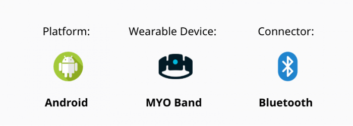

In this study, we have created an auditory-based concept, prototyped to enable the BVI users to type words or messages without touching on a screen. The characters are spoken to the users with a visual impairment and they just need to perform an easy gesture with their hand in order to select the letters. We call this concept a screenless, auditory keyboard.
The letters are looped continuously by the keyflow in an A-Z order.
These 26 alphabets are divided in groups of 5 called chunks.
These letters are divided in chunks to get to a latter letter faster.
The users perform simple combinations of gestures to select a character, skip chunks forward, go letter-by-letter backwards, delete characters and pronounce letters or words framed.
Auditory and haptic cues (vibrations of the band) are also embedded to provide feedback to the user.
We executed an exploratory empirical study with 20 participants who are blind to evaluate the conceptual fit of keyflows to the user’s experience, and learn the potential and limitations of the approach.

This section of the tool describes out how a manager would login to the tool and make informed decisions using the real-time graphs and tabular data to drill down to the most granular detail about a campaign.
This design overhaul has positively impacted the business and entirely transformed the product to compete with other competitors like Adobe Campaign Manager and Salesforce.
The learning curve is relatively low and most of the client are ready to be transition to a in-house operations team from the one provided by IMIMobile.
The overall time-taken to navigate through the product was reduced by 50%.
Time taken to create targeted campaigns was reduced by at least 30%.
Reduced the hand-off time by a massive 45%.
As this was an enterprise level product the users were in a different geographic location hence it was very difficult to contextualize the importance of certain actions and user requirements. Although, the remote user interactions and expert
user inputs helped us to gain as much context possible in the short time that we had.
Hence, if given an opportunity more time with the users is required to better empathize how they use; and conduct sessions to evaluate their interactions with the new system.